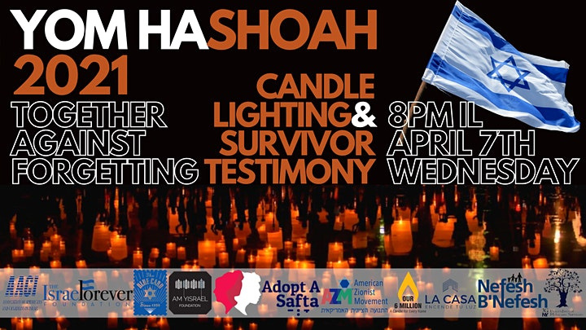
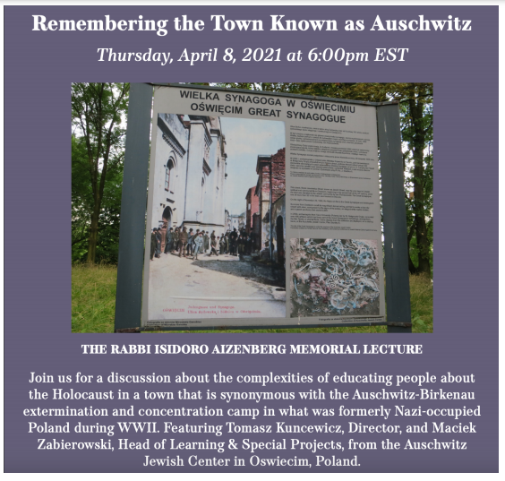
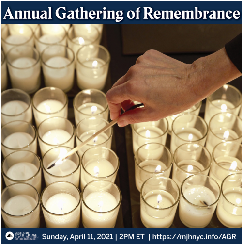
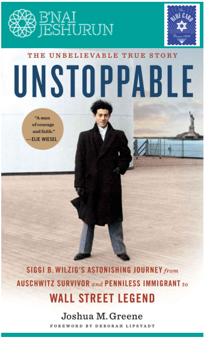
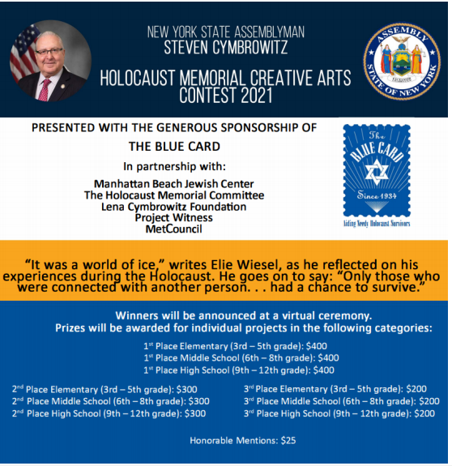

Blog Summary
Together Against Forgetting Join us online to be unified as one people as we hear live from Holocaust Survivor Sally Frishberg about her incredible story. Let’s also get inspired together by a special Yom HaShoah candle lighting in Israel in memory of our six million lost and say Kaddish.
Together Against Forgetting Join us online to be unified as one people as we hear live from Holocaust Survivor Sally Frishberg about her incredible story. Let’s also get inspired together by a special Yom HaShoah candle lighting in Israel in memory of our six million lost and say Kaddish. Yom HaShoah Commemoration Please join us for a meaningful, virtual Yom HaShoah Commemoration, hosted by The Jewish Federations of North America. The event will bring together over 100 Holocaust survivors for an intergenerational Yom HaShoah commemoration. In partnership with the Network of Jewish Human Service Agencies and UNIPER, the Israeli innovation keeping Holocaust survivors and older adults connected during this difficult time. Student Education Days Grade 6-12 Teachers: Register your classrooms for Holocaust Remembrance Day programs!
These FREE virtual programs are offered to Englishspeaking classrooms from all countries (Grades 6-12 or equivalent students aged 11+)
You and your students will meet Holocaust Survivors and attend age-appropriate programming, presented by leading Holocaust organizations from Canada, USA, Israel, and the Netherlands!
April 7-8 | Free Remembering the Town Known As Auschwitz Join us for a discussion about the complexities of educating people about the Holocaust in a town that is synonymous with the Auschwitz-Birkenau extermination and concentration camp in what was formerly Nazi-occupied Poland during WWII. Featuring Tomasz Kuncewicz, Director, and Maciek Zabierowski, Head of Learning & Special Projects, from the Auschwitz Jewish Center in Oswiecim, Poland. April 8, 6:00pm EST | Free Austin Jewish Film Festival Austin Jewish Film Festival (AJFF) is screening 2 films for Yom HaShoah free to the public! Syndrome K and #Uploading_Holocust are both documentaries about the Holocaust
April 3-10 | Free Museum of Jewish Heritage The Blue Card is proud to partner with MJH for the Annual Gathering of Remembrance. Every year, the Museum brings thousands of New Yorkers together to say with one collective voice: we will never forget.
Please join us for this virtual gathering in observance of Yom HaShoah. The program will feature music, remarks from Holocaust survivors, young people, and public figures, and a candle lighting ceremony. Together, we will honor the memory of those who perished at the hands of evil and pay tribute to those who survived and have made a better world for us all.
April 11, 2:00pm EST | Free Yom HaShoah Book Talk: We warmly invite you to join the BJ rabbis to conclude Yom HaShoah for a conversation with Joshua M. Greene, author of a new book on Siggi Wilzig’s incredible story, Unstoppable: Siggi B. Wilzig’s Astonishing Journey from Auschwitz Survivor and Penniless Immigrant to Wall Street Legend.
Greene, a lecturer on Holocaust history, will be in conversation with Dr. Eva Fogelman, a psychologist and pioneer in historical trauma research and therapeutic
April 8, 7:30pm - 9:00pm EST Holocaust Memorial Creative Arts Contest The COVID-19 pandemic has impacted our lives in ways we could never have imagined only a few months ago. As we listen now to the testimonies of those who endured the Holocaust, we may do so with a new sense of awe at how they found the strength to remain connected. When we sustain connectedness, we are creating a world very different from the cruel, cold world-the “world of ice” – experienced by Wiesel and so many others during the Holocaust. By staying connected, we share strength and support each other through times of global or personal hardship.
Through your creativity in art, poetry, prose, or film, explore your understanding of the Holocaust and the role of connectedness in making us stronger both as people and as a community.
We are pleased to announce the launch of Assemblyman Cymbrowitz’s 2021 Holocaust Memorial Creative Arts Contest! (Prizes will be awarded to the winners)
Submissions close on May 21, 2021




